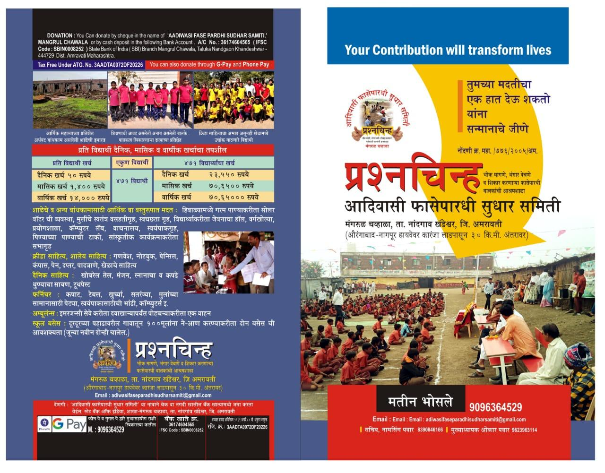
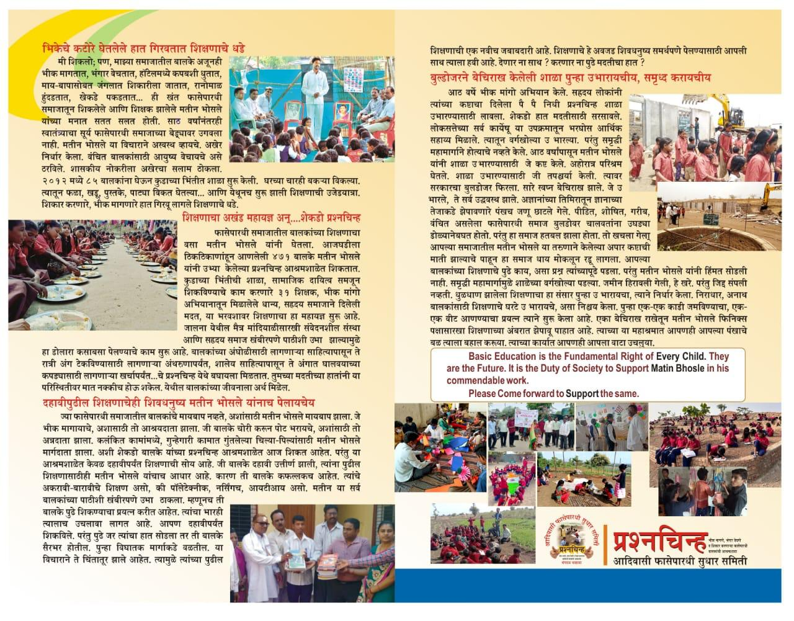
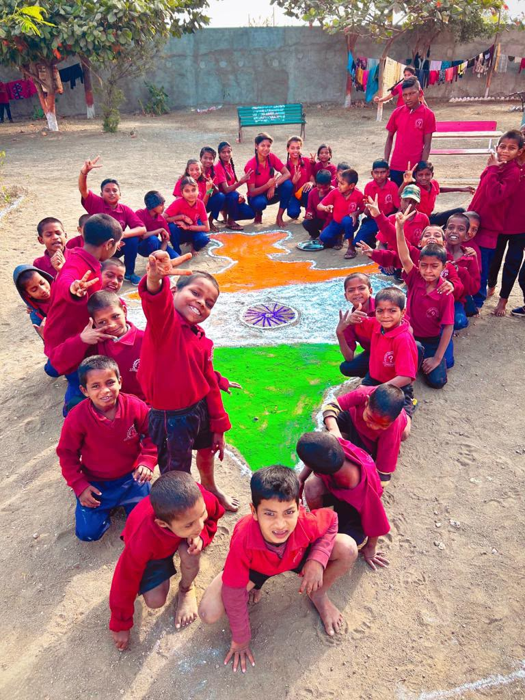
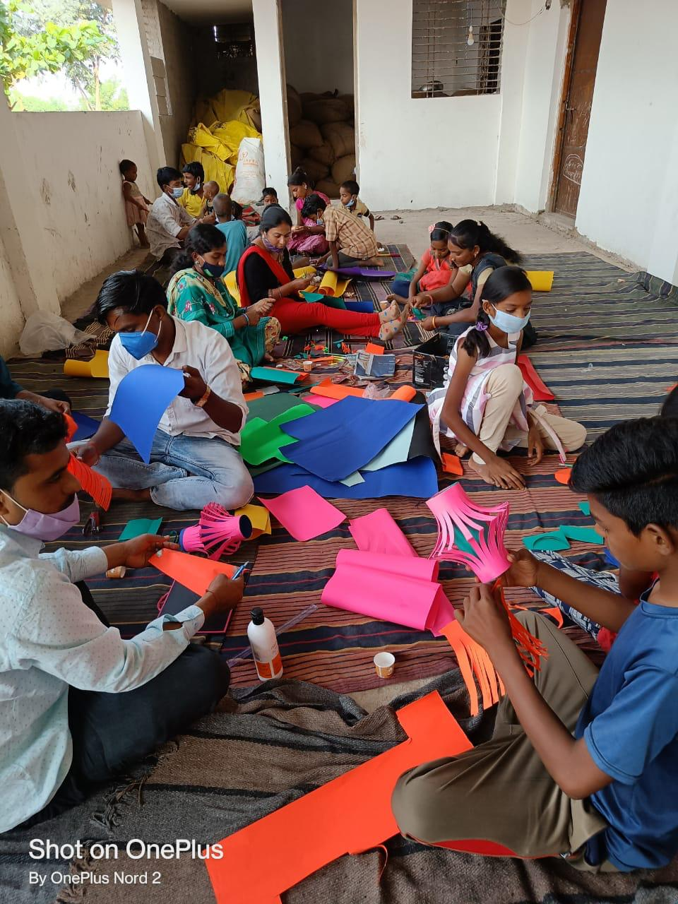
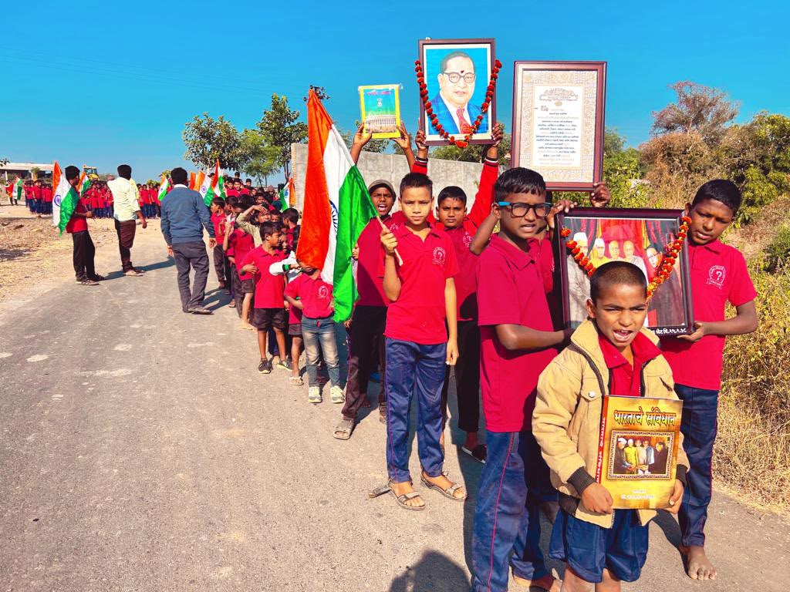
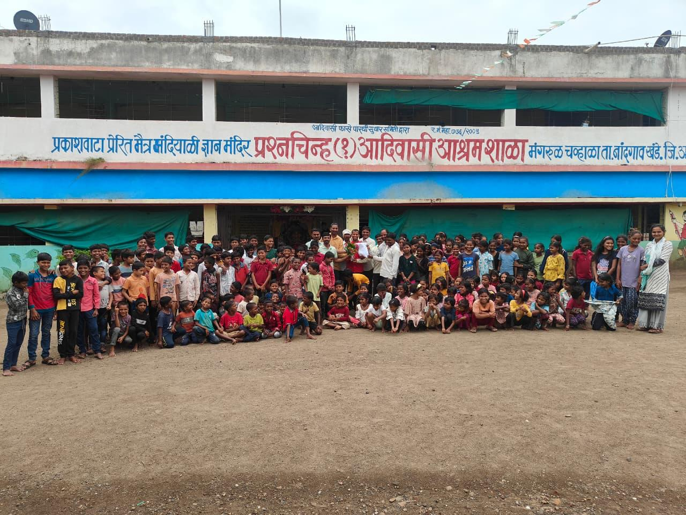
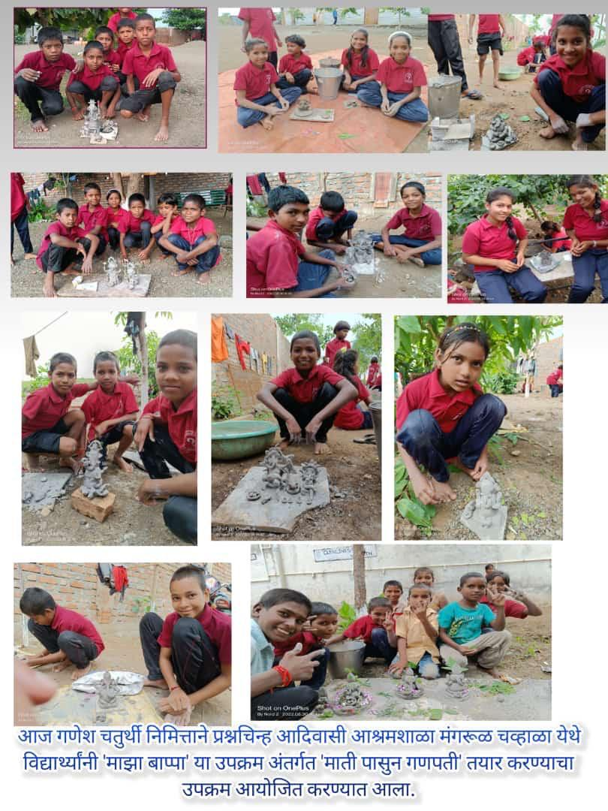
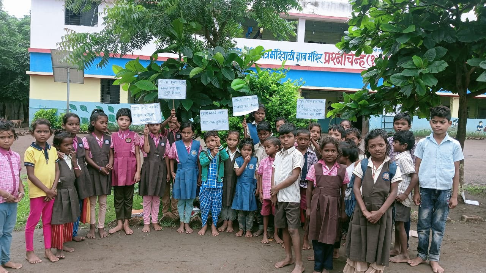
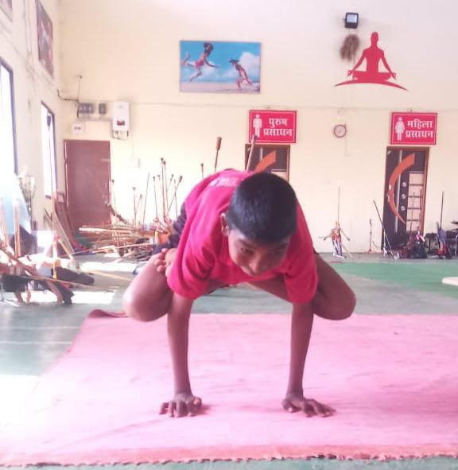
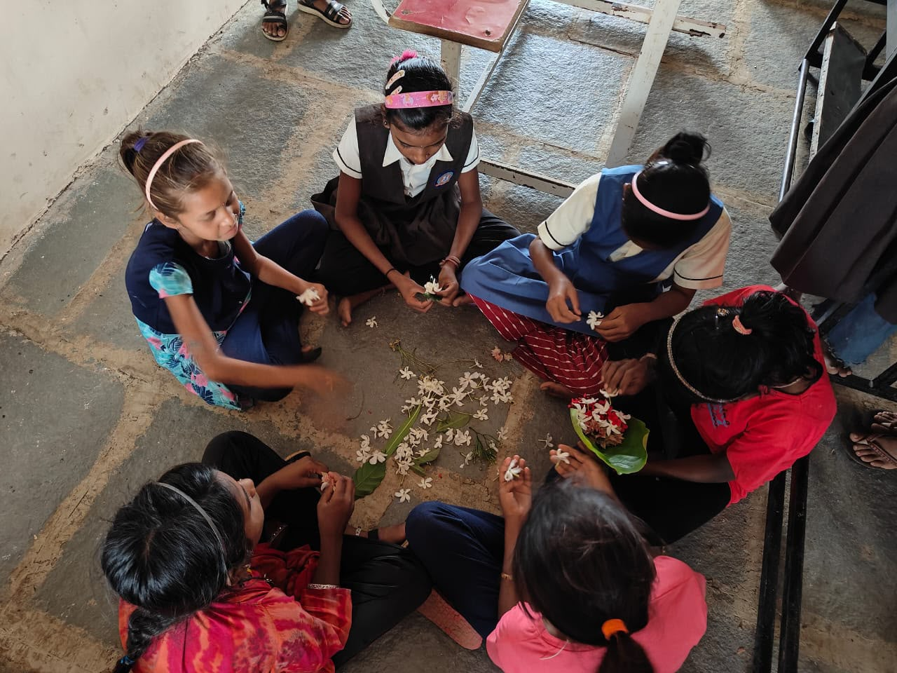

प्रश्नचिन्ह शाळेची माहिती
Prashnachinh School Information
शाळेचे कार्य, विद्यार्थी आणि शिक्षणासाठी आवश्यक सुविधांची माहिती.
Information about the school, students and facilities needed for education.
१८८ मुलांपासून आजच्या विद्यार्थ्यांच्या उज्ज्वल भविष्यापर्यंत — शिक्षण, संघर्ष, संस्कार आणि परिवर्तनाची कहाणी.
From 188 children to a journey of education, dignity, opportunity and a brighter future.
एका शाळेचा, हजारो स्वप्नांचा आणि शिक्षणातून घडलेल्या परिवर्तनाचा प्रवास.
The journey of a school, thousands of dreams and transformation through education.
आदिवासी फासे पारधी समाजातील अनेक मुले सामाजिक, आर्थिक आणि शैक्षणिक अडचणींमुळे शिक्षणाच्या मुख्य प्रवाहापासून दूर होती. त्यांच्या जीवनात शिक्षणाची नवी दिशा निर्माण करण्याचा संकल्प आदिवासी फासे पारधी सुधार समितीने केला.
सन २००५ पासून संस्थेने समाजातील मुलांच्या शिक्षणासाठी सातत्याने काम सुरू केले. शिक्षण हे केवळ अक्षरज्ञान नसून आत्मविश्वास, स्वाभिमान आणि चांगल्या भविष्याची वाट आहे, या विचारातून संस्थेचा प्रवास पुढे गेला.
प्रश्नचिन्ह आदिवासी आश्रमशाळेच्या माध्यमातून विद्यार्थ्यांना शिक्षणासोबतच निवास, अन्न, आरोग्य, कपडे, शैक्षणिक साहित्य, संगणक शिक्षण, क्रीडा आणि संस्कारांची संधी उपलब्ध करून देण्याचा प्रयत्न सातत्याने केला जात आहे.
सन २०११ मध्ये १८८ विद्यार्थ्यांपासून शाळेच्या शैक्षणिक प्रवासाला सुरुवात झाली. मर्यादित साधने, निवास व अन्नाच्या अडचणी आणि विविध सामाजिक परिस्थितींमधून हा प्रवास पुढे गेला.
आज हा प्रवास विद्यार्थ्यांना शिक्षण, सुरक्षितता, संधी आणि स्वाभिमान मिळवून देण्याच्या उद्देशाने सुरू आहे. कला, संस्कृती, विज्ञान, संगणक, क्रीडा, पर्यावरण, स्वच्छता आणि सामाजिक जाणीव यांसारख्या उपक्रमांत विद्यार्थ्यांचा सहभाग वाढवला जातो.
समाजातील दाते, स्वयंसेवी संस्था, मित्रपरिवार आणि संवेदनशील नागरिकांच्या सहकार्यामुळे अनेक उपक्रमांना बळ मिळाले. छोट्या छोट्या मदतीतून विद्यार्थ्यांच्या जीवनात मोठे बदल घडवण्याचा प्रयत्न सुरू आहे.
पुढील काळात डिजिटल शिक्षण, संगणक प्रयोगशाळा, वाचनालय, क्रीडा, आरोग्य, कौशल्य विकास आणि विद्यार्थ्यांसाठी अधिक चांगल्या निवासी सुविधा निर्माण करण्याचे उद्दिष्ट आहे.
प्रश्नचिन्ह शाळेची कहाणी अजून पूर्ण झालेली नाही. प्रत्येक नवीन विद्यार्थी, प्रत्येक नवीन वर्ग, प्रत्येक नवीन उपक्रम आणि प्रत्येक नवीन स्वप्न या प्रवासाचा पुढचा अध्याय आहे.
Many children from the Fase Pardhi tribal community remained away from mainstream education because of social, economic and educational challenges. Adivasi Fase Pardhi Sudhar Samiti began working to create a new direction through education.
Since 2005, the organisation has continuously worked for the education of children from the community. The belief has been that education is not only literacy, but also confidence, dignity and a pathway towards a better future.
Through Prashnachinh Tribal Ashram School, students receive education along with residential care, food, healthcare, clothing, educational materials, computer education, sports and opportunities for character development.
In 2011, the school's educational journey began with 188 students. The early years included challenges related to limited resources, residential facilities, food and difficult social circumstances.
Today, the journey continues to provide education, safety, opportunity and dignity. Students participate in art, culture, science, computers, sports, environment, cleanliness and social awareness activities.
Support from donors, organisations, friends and compassionate citizens has strengthened several initiatives. Small contributions can create meaningful changes in students' lives.
The future vision includes digital education, computer facilities, a library, sports, healthcare, skill development and better residential facilities.
The story of Prashnachinh is still being written. Every new student, classroom, activity and dream becomes another chapter.
शाळेची माहिती, गरजा आणि कार्याची प्रत्यक्ष छायाचित्रे.
School information, needs and real photographs from the work.

शाळेचे कार्य, विद्यार्थी आणि शिक्षणासाठी आवश्यक सुविधांची माहिती.
Information about the school, students and facilities needed for education.

शिक्षण, निवास, अन्न, सुविधा आणि विद्यार्थ्यांच्या भविष्यासाठीचा प्रयत्न.
Education, residential care, food, facilities and support for students' future.
journey-01 ते journey-12 — शाळेच्या प्रवासातील निवडक क्षण.
journey-01 to journey-12 — selected moments from the school journey.

विद्यार्थ्यांचा सांस्कृतिक उपक्रम
Students' Cultural Activity

विद्यार्थ्यांचा हस्तकला उपक्रम
Students' Handicraft Activity

जनजागृती आणि सामाजिक सहभाग
Awareness and Social Participation

शाळेतील सामूहिक कार्यक्रम
School Community Programme

शाळा आणि विद्यार्थ्यांचा प्रवास
School and Students' Journey

शाळेच्या प्रवासातील विशेष क्षण
A Special Moment in the Journey

विद्यार्थ्यांच्या उपक्रमातील क्षण
Students' Activity

शाळा आणि विद्यार्थ्यांच्या आठवणी
School and Student Memories

गणेशमूर्ती निर्मितीचा उपक्रम
Ganesh Idol Making Activity

जनजागृती उपक्रम
Awareness Activity

योग आणि शारीरिक उपक्रम
Yoga and Physical Activity

विद्यार्थिनींचा सर्जनशील उपक्रम
Creative Activity by Students
media-master मध्ये असलेल्या news-01.jpg ते news-36.jpg या संपूर्ण संग्रहाचा हा एकत्रित भाग.
The complete news archive from news-01.jpg to news-36.jpg is included on this page.
शाळा, विद्यार्थी, उपक्रम आणि सामाजिक कार्याशी संबंधित व्हिडिओ.
Videos related to the school, students, activities and social work.
आदिवासी फासे पारधी सुधार समिती
मंगरूळ चव्हाळा, ता. नांदगाव खंडेश्वर, जि. अमरावती, महाराष्ट्र
📞 9096364529
📞 9764239458
✉️ adiwasi fasepardhisudharsamiti@gmail.com
Adivasi Fase Pardhi Sudhar Samiti
Mangrul Chawhala, Taluka Nandgaon Khandeshwar, District Amravati, Maharashtra
📞 9096364529
📞 9764239458
✉️ adiwasi fasepardhisudharsamiti@gmail.com